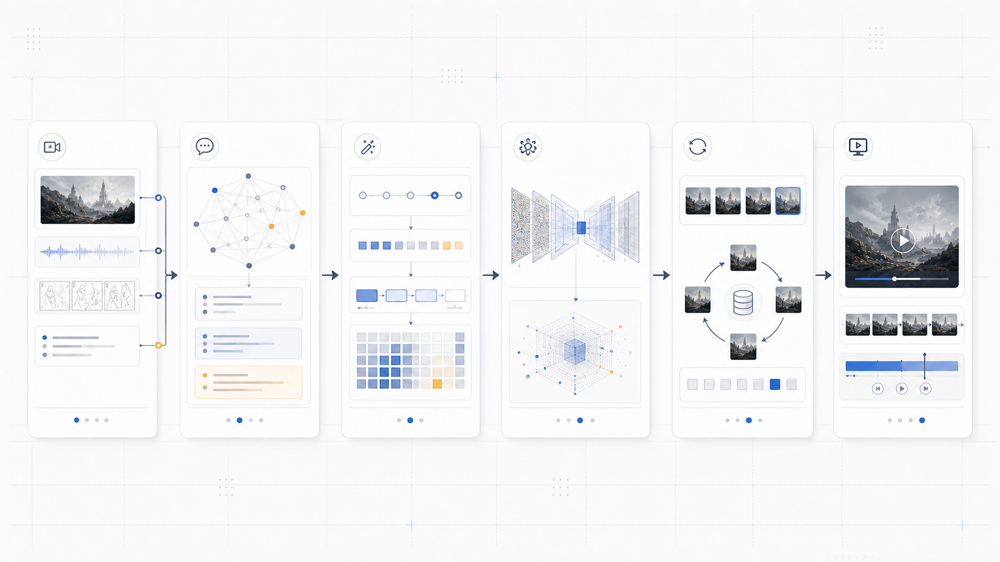

Case Study · Generative AI Production
Agile Vibe Pre-Production Storyboard Patent
A generative AI patent for storyboard generation in agile pre-production workflows.
Overview
Creative Problem
Pre-production often requires rapid movement between concept, scene structure, visual direction, and revision. This case explores how generative AI can support that early creative loop without reducing production to a single image-output task.
System Direction
The system frames AI as a planning partner for scenario development, shot organization, storyboard generation, and iterative review across agile media production workflows.
System Architecture
Scene Input
Scene descriptions, characters, shot intent.
LLM Reasoning
Scene analysis and production-aware planning.
Prompt Engine
Style, composition, and appearance control.
Diffusion Stack
Frame generation with LoRA and ControlNet.
Previz Output
Storyboard frames assembled into video.
Changed prompts trigger targeted updates instead of full regeneration.
Prompt hashes and scene states support fast comparison and iteration.
The workflow keeps the director's decision loop visible and editable.
Detailed View Open the full architecture diagram

Workflow
Structure Creative Intent
Translate early ideas into production-ready narrative and visual planning inputs.
Generate Production Prompts
Connect scenario, scene, character, shot, and style information into repeatable prompt logic.
Create Storyboard Frames
Generate visual frames through an image model stack guided by composition and style controls.
Iterate Selectively
Detect changes, reuse session context, and regenerate only the parts that need revision.
Assemble Previz Output
Convert selected storyboard frames into a time-based previsualization sequence.
Outcome
Official Title
Generative Artificial Intelligence-Based Agile Vibe Pre-Production Storyboard Generation Apparatus, Method Therefor, and Recording Medium.
Practice Area
The project connects generative AI production, VR storyboarding, media planning, and creative technology research.